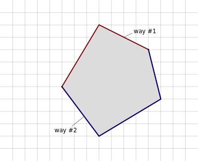

Motivation


Flächendeckung pro Gemeinde
Multipolygone (Einführung)

Way 1: landuse=forest
Multipolygone (Einführung)
Relation 1: type=multipolygon + landuse=forest
Way 1: keine Tags
Way 2: irgendwelche Tags
Multipolygone (Einführung)

Relation 1: type=multipolygon + landuse=forest
Way 1: keine Tags
Way 2: irgendwelche Tags
Way 3: irgendwelche Tags
Multipolygone (Einführung)
Relation 1: type=multipolygon + landuse=forest
Way 1: irgendwelche Tags, z.B. highway=primary
Way 2: irgendwelche Tags, z.B. highway=track
Unnötige Multipolygone (Definition)


Unnötige Multipolygone pro Gemeinde
Trennung von Verkehrswegen und Landnutzung

Mit Straßen verbundene Landnutzung

Von Straßen getrennte Landnutzung
Von Straßen getrennte Landnutzung

Mit Straßen verklebte Landnutzung
Länge der verklebten Straßen bezogen auf gesamte Straßennetzlänge
Beinahe Straßen verklebte Landnutzung
Länge der beinahe verklebten Straßen bezogen auf gesamte Straßennetzlänge (Abstand max. 0,5 m)
Wie alt sind unsere Wälder?
Wald bei Eiterfeld (Kr. Fulda) aus dem Jahr 2008 (vermutlich mit Yahoo- oder Landsat-Bildern)
Wo sind die alten Polygone?
Median-Alter der Nodes pro Gemeinde